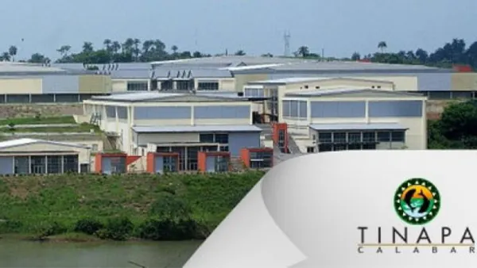

Tinapa Resort and Business City
Originally pitched as a tourism, leisure, and business destination, the site remains a major example of stalled public-private planning.
- Status: Abandoned / partially active
- Purpose: Tourism and commercial development